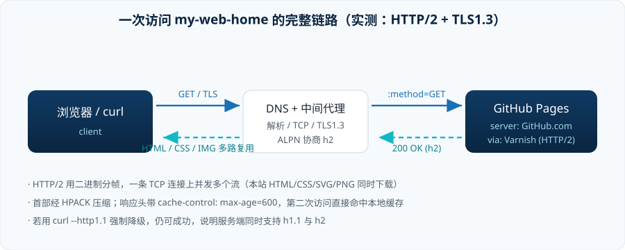

结论先行
本站点 https://a1exthegreat.github.io/my-web-home/ 实际使用 HTTP/2（协议标识 h2），运行在 TLS 1.3 之上；服务端为 GitHub Pages（server: GitHub.com，经 Fastly / Varnish 边缘缓存）。
| 观测项 | 结果 | 依据 |
|---|---|---|
| HTTP 协议版本 | HTTP/2 | 状态行 HTTP/2 200；%{http_version} 输出 2 |
| 协商方式 | TLS ALPN | 客户端 offers h2,http/1.1 → server accepted h2 |
| 传输层安全 | TLS 1.3 | TLSv1.3 / TLS_AES_128_GCM_SHA256 / X25519 |
| 能否降级 | 可以，HTTP/1.1 仍返回 200 | curl --http1.1 → http_version=1.1 code=200 |
| 是否支持 HTTP/3 | 未见宣告 | 响应头无 alt-svc；换用 h3 无法建立 |
| 缓存策略 | max-age=600 + ETag | 带 If-None-Match 重访返回 HTTP/2 304 |
方法一：curl 看协商过程
curl -v -I https://a1exthegreat.github.io/my-web-home/
关键行（完整输出见文末附录）：
* ALPN: curl offers h2,http/1.1 * SSL connection using TLSv1.3 / TLS_AES_128_GCM_SHA256 / X25519 / RSASSA-PSS * ALPN: server accepted h2 * using HTTP/2 * [HTTP/2] [1] [:method: HEAD] * [HTTP/2] [1] [:scheme: https] * [HTTP/2] [1] [:authority: a1exthegreat.github.io] * [HTTP/2] [1] [:path: /my-web-home/] < HTTP/2 200 < server: GitHub.com < content-type: text/html; charset=utf-8 < cache-control: max-age=600
注意最后请求行变成了 :method / :scheme / :authority / :path 这样的伪首部：HTTP/2 不再发 HEAD / HTTP/1.1 文本行，而是二进制分帧 + HPACK 压缩首部。这也是为什么用 telnet 那套看 HTTP/1.x 的办法在 h2 上完全失效。
方法二：只取版本号的快捷写法
curl -sS -o /dev/null -w "%{http_version} %{url_effective}\n" https://a1exthegreat.github.io/my-web-home/ # 2 https://a1exthegreat.github.io/my-web-home/
逐资源统计一遍，确认样式表和图片同样走 h2：
/ HTTP/2 200 7523B text/html; charset=utf-8 /ustc.html HTTP/2 200 8367B text/html; charset=utf-8 /research.html HTTP/2 200 8253B text/html; charset=utf-8 /blog.html HTTP/2 200 9851B text/html; charset=utf-8 /css/style.css HTTP/2 200 9922B text/css; charset=utf-8 /img/campus.svg HTTP/2 200 4190B image/svg+xml /img/skill-radar.png HTTP/2 200 17932B image/png
方法三：浏览器侧印证
在 DevTools 的 Network 面板把 Protocol 列勾出来即可看到 h2；也可以用 PerformanceResourceTiming.nextHopProtocol 直接取值：
performance.getEntriesByType("resource").map(r => [r.name.split("/").pop(), r.nextHopProtocol]) // [["style.css","h2"], ["avatar.svg","h2"], ["skill-radar.png","h2"], ["network-mesh.svg","h2"], ...]
h2，结论才算站得住。原始报文与响应头解读
HTTP/1.1 200 Connection established <= 干扰项！这是本地代理的 CONNECT 隧道，不是本站版本 HTTP/2 200 <= 真正的状态行：HTTP/2 server: GitHub.com content-type: text/html; charset=utf-8 last-modified: Mon, 28 Sep 2026 15:31:39 GMT strict-transport-security: max-age=31556952 # HSTS：强制后续走 https access-control-allow-origin: * etag: "6aba885b-1d63" # 条件请求用（下文 304） cache-control: max-age=600 # 浏览器缓存 10 分钟 expires: Mon, 28 Sep 2026 15:41:53 GMT accept-ranges: bytes via: 1.1 varnish # 边缘缓存命中，via 只描述该跳 x-served-by: cache-sin-wsap440085-SIN # Fastly 新加坡边缘节点 x-cache: HIT x-github-edge-region: southeastasia vary: Accept-Encoding content-length: 7523
HTTP/1.1 200 Connection established 会让人误以为"这个网站是 HTTP/1.1"。它其实是本机代理为建立 TLS 隧道而回复的 CONNECT 响应；真正的站点响应是它下面那个 HTTP/2 200。同理 via: 1.1 varnish 说的是缓存那跳的协议，不能当作端到端版本。条件请求：第二次访问发生了什么
ET=$(curl -sSI $B/css/style.css | awk -F'"' '/etag/{print $2}') curl -sS -D - -o /dev/null -H "If-None-Match: \"$ET\"" $B/css/style.css # HTTP/2 304 # cache-control: max-age=600 # etag: "6aba885b-26c2"
服务器只回一个不带 body 的 304 Not Modified，9.9 KB 的样式表一个字节都不用重传 —— 这就是 strong-ETag + max-age 组合的实际效果。
降级对照实验
curl -sS --http1.1 -o /dev/null -w "%{http_version} %{http_code}\n" $B/ # 1.1 200 <= 服务端两种都支持，由 ALPN 决定用哪个
说明 "HTTP/2" 并不是服务端强制的唯一选择：把 ALPN 里的 h2 拿掉，它还能继续用 HTTP/1.1 服务。这也是为什么很多兼容性排查要两个版本都跑一遍。
顺手做的一张对比表
| 维度 | HTTP/1.1 | HTTP/2 本站 | HTTP/3 |
|---|---|---|---|
| 报文格式 | 纯文本，可 telnet | 二进制分帧 + HPACK | 二进制，QUIC 帧 |
| 并发 | 流水线，仍有队头阻塞，浏览器只能开 6 条连接 | 一条 TCP 上多流并发 | 一条 QUIC 连接上多流，流间不阻塞 |
| 传输层 | TCP | TCP(+TLS) | UDP / QUIC |
| 首部开销 | 每次全量重复 | HPACK 索引表 | QPACK |
| 服务器推送 | — | 标准里有，实践已基本弃用 | 无 |
| 本站是否可用 | 可用（已实测降级） | ✔ 实际使用 | 未宣告 alt-svc，测不通 |

附录：完整命令记录
- 协议与版本：
curl -v -I https://a1exthegreat.github.io/my-web-home/ - 只取版本：
curl -sS -o /dev/null -w "%{http_version}" <URL> - 降级对照：
curl --http1.1 -sS -o /dev/null -w "%{http_version} %{http_code}" <URL> - 条件请求：
curl -sS -D - -o /dev/null -H 'If-None-Match: "<etag>"' <URL> - 浏览器印证：DevTools → Network → Protocol 列 /
nextHopProtocol
参考标准：RFC 9112 HTTP/1.1、
RFC 9113 HTTP/2、
RFC 9114 HTTP/3、
RFC 7301 TLS ALPN。
观测时本机走了一个本地 HTTP 代理（CONNECT 隧道），对端到端协议版本无影响：去掉代理直连，结果同样是 HTTP/2 200。